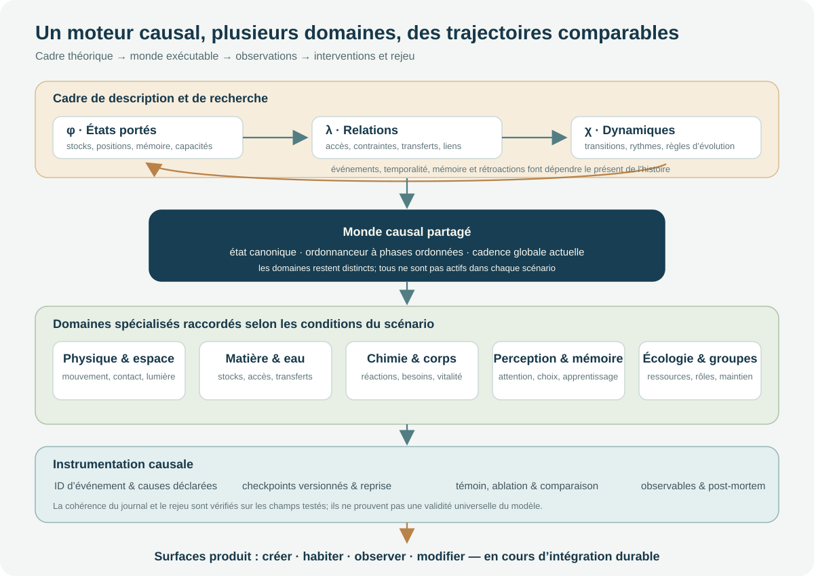
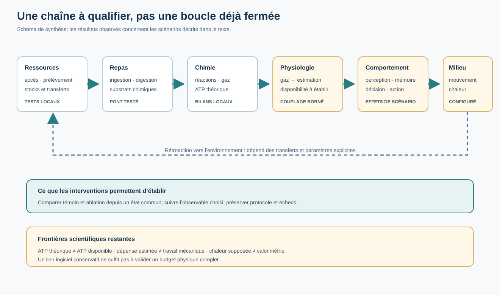

En 30 secondes. Le projet relie états, relations et dynamiques dans un monde causal partagé : matières et ressources, corps et locomotion, perception, mémoire, décisions et organisation collective. Il comprend un programme théorique plus large que le logiciel actif, un runtime expérimental, des instruments de traçabilité et plusieurs surfaces produit. Le moteur et ses recettes restent privés; ce dossier décrit les capacités et les résultats avec leur portée réelle.
Le moteur en une vueDes causes locales aux effets qui traversent les domaines.
Les événements portent des identifiants et des liens de cause; des points de contrôle versionnés permettent de reprendre un état et de comparer des relectures dans les conditions testées. Les campagnes combinent séquences intégrées, ablations, calibrations et diagnostics post-mortem.
Le cadre théorique répertorie 11 formulations, cinq questions de cascade et une carte de 23 échelles. Ces éléments ont des statuts différents : le catalogue ne signifie pas que 23 échelles sont simulées ni que 11 formulations sont toutes validées.
Voir la carte détaillée du programme →

L’apport du projetSuivre une cause jusqu’aux conséquences qu’elle change.
Des domaines spécialisés partagent un monde sans perdre leurs règles locales. Le runtime rend leurs interactions consultables dans une histoire causale, puis permet de reprendre et comparer des branches pour examiner l’effet d’un mécanisme sur la suite.
Les démonstrations couvrent les raccords effectivement construits et testés. Le cadre vise une composition extensible; l’intégration automatique de tout modèle tiers n’est pas revendiquée. Les contrats détaillés et recettes restent privés.
Les contrats d’accès et de temps recensent les états et événements accessibles ainsi que les régimes de mise à jour. Sur 44 phases et 71 composants, l’inventaire classe 49 mises à jour par pas de référence, 17 par temps écoulé et 5 en régime mixte. Des 32 composants sans pas global direct, 2 restent sans dt direct : une projection anatomique à retour différé et une étape de fabrication discrète, qui ne sont pas des taux directs. Trois mécanismes reçoivent maintenant le temps écoulé selon des hypothèses de taux encore non calibrées; l’un conserve en outre une division discrète à seuil. Cet inventaire ne certifie pas la synchronisation physique.

La boucle du mondeCréer. Habiter. Découvrir.
L’idée est de relier un lieu, ses objets, ses ressources et ses habitants dans une histoire commune, puis de rendre cette histoire compréhensible.
01 · IMAGINER✳
Façonner un lieu
Composer des espaces, des objets et les conditions d’une histoire.
02 · EXPLORER⌂
Le voir prendre forme
Des habitants rencontrent des ressources, des contraintes et des interactions.
03 · COMPRENDRE↗
Suivre ce qui change
Parcourir les événements et observer comment le monde évolue.
La visionUn monde n’est pas qu’un décor.
Les lieux, les objets, les besoins et les relations peuvent s’influencer. Le projet explore comment ces mécanismes se rencontrent dans une même histoire — et comment une personne peut ensuite la modifier.
Plusieurs fonctions sont déjà développées séparément
Le parcours complet, continu et durable reste en développement. Les résultats présentés décrivent des scénarios précis et leurs limites.
 Des résultats de plusieurs échelles
Des résultats de plusieurs échellesDes boucles intégrées, des calibrations et des campagnes longues.
Ces observations ne mesurent pas toutes la même chose. Certaines testent un mécanisme ciblé; d’autres suivent plusieurs domaines dans le temps ou mesurent le coût de leur instrumentation.
COMPORTEMENT RELIÉ↻
Une expérience change une action
Dans plusieurs initialisations d’un scénario de jardin, une trace contribue à un trajet puis à une irrigation ultérieure. Les branches témoins sans cette contribution ne produisent pas la même action.
MONDE INTÉGRÉ◎
Les conséquences s’accumulent
Une campagne de subsistance d’environ deux heures a suivi mémoire, déplacements, ressources et organisation. Une branche s’est dissoute au pas 1 855 sur 2 160; le post-mortem a relié une partie de l’échec aux blocages et à l’accès aux ressources.
DOMAINES TESTÉS⌁
Des contrôles spécialisés
Les lots terminés documentent notamment 122/122 contrôles de physique numérique, 31/31 d’hydrologie domestique, 11/11 de coordination du moteur et 192/192 contrôles dans un lot corps, perception et mémoire. D’autres campagnes couvrent locomotion, optique, écologie et audition.
CHARGE MESURÉE▤
La trace a un coût réel
La campagne intégrée a atteint près de 3,8 Go de mémoire vive et dépassé un million d’événements dans sa branche la plus instrumentée. Ce chiffre décrit le scénario et son journal, pas une limite maximale du moteur.
Un indicateur d’endurance parmi les campagnesUne exécution longue, avec sa progression mesurée.
Le relevé filtré contient 2,873 mesures et enregistre 416 ticks nets (de 809 à 1225); la mémoire résidente s’est située entre 0.87 et 1.32 Gio. Le processus était actif à chaque mesure, ce qui indique seulement qu’il n’avait pas quitté.
Progression : aucun tick n’a avancé durant les 9.0 dernières minutes de la fenêtre mesurée. Le CSV du monde contient 6 instantanés espacés (ticks 1, 809, 900, 1000, 1225, 1274); le dernier vient d’une trace distincte sans horodatage commun avec le moniteur.
La fenêtre surveillée atteint 47.99 h, environ 50 secondes de moins que 48 h. Le seuil strict n’est donc pas entièrement documenté; la trace séparée atteint le tick 1274 sans permettre d’aligner sa durée. Cette mesure caractérise une exécution et sa consommation mémoire; elle ne remplace pas les campagnes intégrées ni leurs comparaisons de branches.
 Choisir sa lecture
Choisir sa lectureCommencer par l’essentiel, ou aller plus loin.
Télécharger le dossier complet en PDF
6 PAGES · FRANÇAISLa présentation courte
La vision produit, les grandes fonctions, les résultats observés et les limites, en quelques minutes.
Lire en HTML · Markdown
DOSSIER COMPLET · FRANÇAISLe dossier technique
Une présentation détaillée des domaines, des mécanismes, des démonstrations internes et des chantiers connus. Le dossier complet est actuellement disponible en français.
Lire en HTML · Markdown
Lire la portée des résultats et les priorités de maturation
Projet propriétaire. Le moteur et ses recettes restent privés. Ce dépôt contient de la documentation publique et des schémas de présentation; il s’agit d’un dossier de présentation, pas d’une distribution logicielle. Les campagnes de tests qui se recouvrent ne sont pas additionnées en un total global.